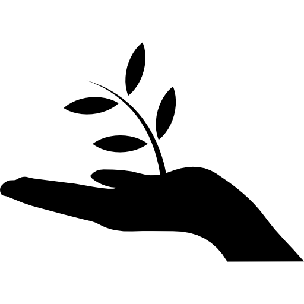

Seleção

Fome Zero
O Programa Fome Zero foi criado para combater a fome e as suas causas estruturais, que geram a exclusão social e para garantir a segurança alimentar dos brasileiros em três frentes: um conjunto de políticas públicas; a construção participativa de uma Política Nacional de Segurança Alimentar e Nutricional; e um grande mutirão contra a fome, envolvendo as três esferas de governo (federal, estadual e municipal) e todos os ministérios.

Agricultura Sustentável
Agricultura sustentável é aquela que respeita o meio ambiente, é justa do ponto de vista social e consegue ser economicamente viável. A agricultura para ser considerada sustentável deve garantir, às gerações futuras, a capacidade de suprir as necessidades de produção e qualidade de vida no planeta.